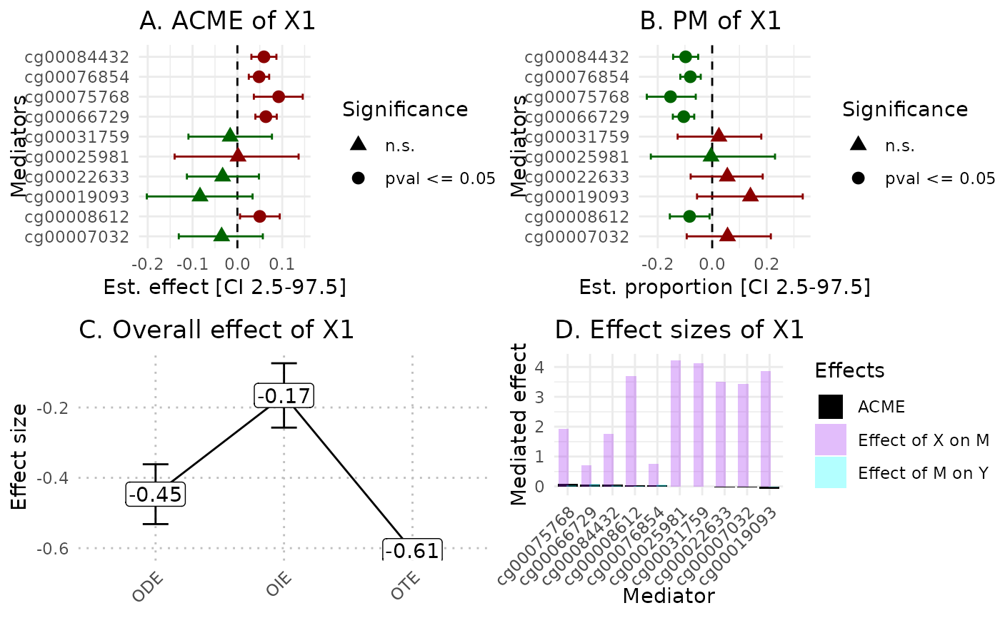

Summary plot for multivariate exposure variables
plot_multivariate.RdThis function draw a summary plot of hdmax2 method results
Examples
# Load example dataset
simu_data = hdmax2::simu_data
exposure = data.frame(X1 = simu_data$X_continuous, X2 = simu_data$X_binary)
covar = cbind(simu_data$age, simu_data$gender)
covar = as.data.frame(covar)
K = 5
hdmax2_step1 = hdmax2::run_AS(exposure = exposure ,
outcome = simu_data$Y_continuous,
M = simu_data$M2,
K = K,
covar = covar)
#> Running first regression with multivariate exposure variables.
#> Running second regression.
#> Running max-squared test.
# Select mediators
mediators_subset = names(sort(hdmax2_step1$max2_pvalues)[1:10])
mediators_top10 = simu_data$M2[, mediators_subset]
# Run {hdmax2} step 2
hdmax2_step2 = hdmax2::estimate_effect(object = hdmax2_step1,
m = mediators_top10)
#> Estimating indirect effect for multivariate exposome.
#> Column 1 is Continuous or Binary in covariable data frame
#> The input exposome is continuous or binary
#> Generate regression 1 for continuous or binary exposure and mediator 1
#> Generate regression 2 for continuous outcome and mediator 1
#> Generate regression 1 for continuous or binary exposure and mediator 2
#> Generate regression 2 for continuous outcome and mediator 2
#> Generate regression 1 for continuous or binary exposure and mediator 3
#> Generate regression 2 for continuous outcome and mediator 3
#> Generate regression 1 for continuous or binary exposure and mediator 4
#> Generate regression 2 for continuous outcome and mediator 4
#> Generate regression 1 for continuous or binary exposure and mediator 5
#> Generate regression 2 for continuous outcome and mediator 5
#> Generate regression 1 for continuous or binary exposure and mediator 6
#> Generate regression 2 for continuous outcome and mediator 6
#> Generate regression 1 for continuous or binary exposure and mediator 7
#> Generate regression 2 for continuous outcome and mediator 7
#> Generate regression 1 for continuous or binary exposure and mediator 8
#> Generate regression 2 for continuous outcome and mediator 8
#> Generate regression 1 for continuous or binary exposure and mediator 9
#> Generate regression 2 for continuous outcome and mediator 9
#> Generate regression 1 for continuous or binary exposure and mediator 10
#> Generate regression 2 for continuous outcome and mediator 10
#> Computing ODE and OTE for continuous outcome.
#> Estimating indirect effect for multivariate exposome.
#> Column 1 is Continuous or Binary in covariable data frame
#> The input exposome is continuous or binary
#> Generate regression 1 for continuous or binary exposure and mediator 1
#> Generate regression 2 for continuous outcome and mediator 1
#> Generate regression 1 for continuous or binary exposure and mediator 2
#> Generate regression 2 for continuous outcome and mediator 2
#> Generate regression 1 for continuous or binary exposure and mediator 3
#> Generate regression 2 for continuous outcome and mediator 3
#> Generate regression 1 for continuous or binary exposure and mediator 4
#> Generate regression 2 for continuous outcome and mediator 4
#> Generate regression 1 for continuous or binary exposure and mediator 5
#> Generate regression 2 for continuous outcome and mediator 5
#> Generate regression 1 for continuous or binary exposure and mediator 6
#> Generate regression 2 for continuous outcome and mediator 6
#> Generate regression 1 for continuous or binary exposure and mediator 7
#> Generate regression 2 for continuous outcome and mediator 7
#> Generate regression 1 for continuous or binary exposure and mediator 8
#> Generate regression 2 for continuous outcome and mediator 8
#> Generate regression 1 for continuous or binary exposure and mediator 9
#> Generate regression 2 for continuous outcome and mediator 9
#> Generate regression 1 for continuous or binary exposure and mediator 10
#> Generate regression 2 for continuous outcome and mediator 10
#> Computing ODE and OTE for continuous outcome.
# Generate plot
hdmax2::plot_multivariate(hdmax2_step2, plot_type= "all_plot")

#> $X1
#> TableGrob (2 x 2) "arrange": 4 grobs
#> z cells name grob
#> 1 1 (1-1,1-1) arrange gtable[layout]
#> 2 2 (1-1,2-2) arrange gtable[layout]
#> 3 3 (2-2,1-1) arrange gtable[layout]
#> 4 4 (2-2,2-2) arrange gtable[layout]
#>
#> $X2
#> TableGrob (2 x 2) "arrange": 4 grobs
#> z cells name grob
#> 1 1 (1-1,1-1) arrange gtable[layout]
#> 2 2 (1-1,2-2) arrange gtable[layout]
#> 3 3 (2-2,1-1) arrange gtable[layout]
#> 4 4 (2-2,2-2) arrange gtable[layout]
#>